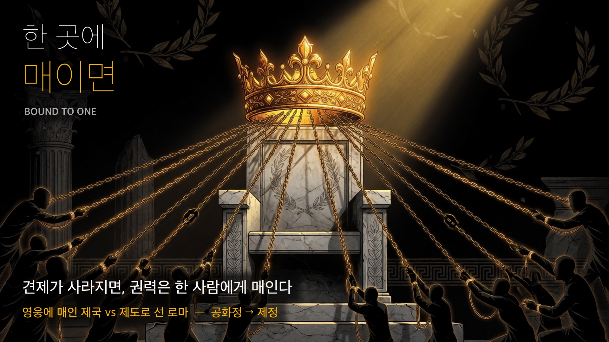
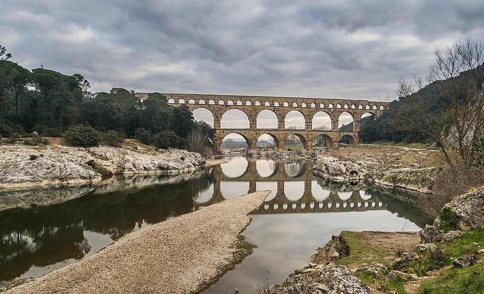
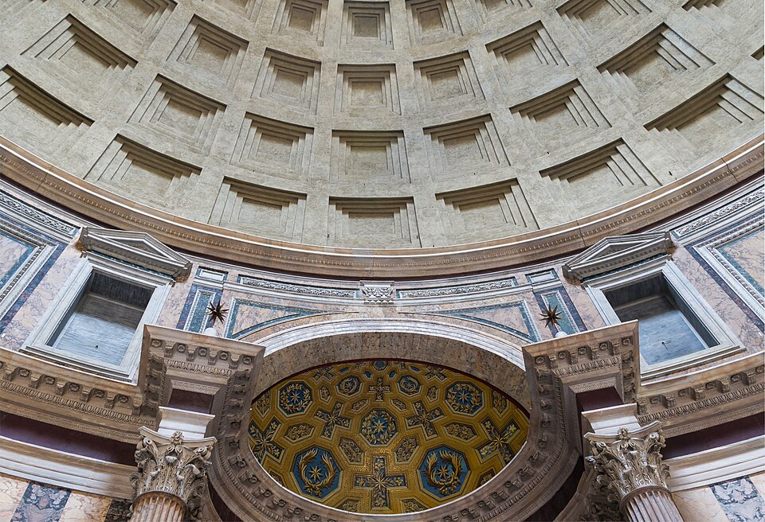

역사① Ⅱ단원 — 로마는 어떻게 1,000년을 갔을까? [정답]
로마는 어떻게 1,000년을 갔을까?

역사① Ⅱ단원 — 로마는 어떻게 1,000년을 갔을까? [정답]
📌 학습 목표
- 로마의 통치 체제(왕정 → 공화정 → 제정)의 변화 과정을 설명할 수 있다.
- 로마 문화(법·건축·도로)와 크리스트교의 등장을 이해할 수 있다.
✨ 오늘의 어휘 (교과서)
- 공화정(共和政): 왕이 없고 개인이나 집단이 국가를 통치하는 정치 형태
- 원로원: 로마에서 입법과 자문을 맡은 최고 의결 기관
- 집정관: 로마에서 정치와 군사를 도맡은 관직
- 호민관(護民官): 평민의 권리를 지키기 위해 뽑은 관리, 원로원·집정관 결정에 거부권 행사 가능
🔤 어려운 말, 영어·어원으로 풀면 쉬워
- 공화정 = 라틴어 Res Publica(공공의 것) → 영어 Republic. 대한민국도 민주공화'국'(共和國)!
- 라티푼디움(latifundium) = lati(넓은) + fundium(땅·농장) = 넓은 땅 = 노예 부리는 대농장. 영어 fund(자금)·foundation(토대)도 같은 뿌리(fundus).
- 호민관 = 라틴어 tribunus → 영어 tribune(평민의 대변자). 신문 이름 'OO 트리뷴'이 여기서 옴.
- 카이사르(Caesar) → 독일 Kaiser(카이저)·러시아 Tsar(차르) — 4단계에서 자세히!
📖 1단계: 도입 — 거대한 제국은 왜 한순간에 무너질까?
🎙️ 지난 시간 기억나? 알렉산드로스는 동방 문화까지 끌어안은 개방적인 대제국을 세웠어. 근데 이상하지 — 그렇게 크고 열려 있던 제국이 그가 죽자(B.C.323) 한 세대도 못 가 장군들 손에 쪼개졌어(헬레니즘 세계). 왜? 제국이 알렉산드로스라는 한 사람(영웅)에게 통째로 '매여' 있었거든. 기둥이 빠지자 무너진 거야.
🎙️ 반대로, 지중해 서쪽 끝의 작고 투박한 나라 로마는 무려 1,000년을 가. 차이가 뭘까? 로마는 한 영웅이 아니라 제도(법·공화정·시민)로 굴러갔거든. 그런데 — 그 로마조차 견제가 무너지자 결국 황제 1인에게 권력이 '매여' 버려(공화정→제정).
🎙️ 요즘으로 치면 이래. 메신저·AI 앱을 딱 한 곳에만 다 맡기면 그 회사 규칙에 묶여 못 빠져나오지 — 이게 종속이야. 정치도 한 세력이 너무 오래 권력을 쥐면 견제가 사라져. 그래서 이번 지방선거에서도 사람들은 "한쪽이 너무 오래 가면 견제하자"며 표를 나눠. 권력이 한 곳에 오래 매이는 걸 경계하는 것 — 이게 민주주의의 기본 감각이야. 로마는 그 경계가 무너졌을 때 어떻게 됐을까? 따라와.
💡 왜 알렉산드로스 제국은 그렇게 빨리 무너졌을까? (보충)
- 제국이 알렉산드로스 개인의 정복·카리스마로 급조됨 → 그가 33세에 갑자기 죽자 구심점이 사라짐.
- 정해진 후계자가 없어 장군들이 영토를 놓고 싸움 → 이집트·서아시아·마케도니아 등으로 분열.
- 정복은 빨랐지만 법·행정·시민 기반을 다질 시간이 없었음.
- 👉 로마는 그 반대 — 제도를 수백 년 쌓아 개인이 죽어도 시스템이 굴러감. 영웅에 매인 제국 vs 제도로 선 제국.
>
(교사 심화 — 디아도코이 후계 전쟁·동서융합 반발 등은 → `2-2-4 로마 자료편.md` [심화·지난 차시 연결])
📖 2단계: 공화정의 성립 — 왕을 몰아내다
기원전 8세기 무렵 로마는 이탈리아반도의 작은 도시 국가로 출발했다. 처음엔 왕정이었으나, 기원전 6세기 말 귀족들이 왕을 몰아내고 ①( 공화정 )을 세웠다. Res Publica = 공공의 것, 영어 Republic의 어원이다.
초기엔 귀족들이 ②( 원로원 )을 중심으로 집정관 등 주요 관직을 독차지했다. 그러나 평민들이 정복 전쟁에 참여하며 세력을 키워, 평민의 권리를 지키는 ③( 호민관 )을 뽑고 평민회를 세웠다.
(교과서 원문: "기원전 8세기 무렵 로마는 이탈리아반도에서 작은 도시 국가로 출발하였다. 처음에는 왕정이었으나 기원전 6세기 말에 귀족들이 왕을 몰아내고 공화정을 세웠다. … 그 결과 평민들은 호민관을 뽑고 평민회를 세울 수 있었다." 비상교육 역사①(이병인) p.48)
💡 왜 호민관이 중요할까? 호민관은 원로원·집정관의 결정에 거부권(veto)을 행사할 수 있었다. 평민이 제도 안에서 귀족을 견제할 장치를 얻은 것 — "신분 투쟁"의 성과. 단, 이 견제가 완전한 평등은 아니었다(3단계 위기로 연결).
💡 로마 직책, 오늘로 치면? (감 잡기용 — 똑같진 않아)
| 로마 | 한 일 | 오늘날 우리로 치면 |
| 공화정 | 왕 없이, 시민이 뽑은 대표가 다스림 | 대한민국도 민주공화국 (헌법 제1조) |
| 원로원 | 정책을 정하는 최고 회의 | 국회와 비슷 (단, 로마는 귀족 모임) |
| 집정관 | 정치·군사 최고 책임자 (2명·임기 1년) | 대통령과 비슷 (단, 2명이 서로 견제·딱 1년) |
| 호민관 | 평민 편에서 거부권 행사 | 국민 권익을 대변하는 자리 |
⚠️ 그대로 같진 않아: 로마 공화정은 신분제 사회라 여성·노예는 정치에서 빠졌고, 원로원도 귀족 모임이었어. "비슷한 점"으로 감만 잡고 다른 점도 같이 기억하자. (오개념 "공화정=현대 민주정" 정정 포인트)
📖 3단계: 공화정의 위기 — 전쟁이 남긴 빈부 격차
기원전 3세기, 이탈리아반도를 통일한 로마는 ④( 카르타고 )와 지중해 해상권을 놓고 세 차례 포에니 전쟁을 벌여 승리하고, 지중해 세계를 지배했다.
그런데 전쟁이 남긴 그늘이 있었다.
🎙️ 생각해 봐. 농민이 군대 가서 몇 년씩 전쟁하면 그 사이 밭은 누가 갈아? 황폐해지고, 빚지고, 땅을 팔지. 그 땅을 귀족이 헐값에 사서 노예 부리는 거대 농장을 만들어. 이게 ⑤( 라티푼디움 )(대농장)이야. 자영 농민은 몰락하고, 군대 갈 자격도 잃어. 공화정의 뿌리(시민)가 무너진 거지.
호민관 ⑥( 그라쿠스 ) 형제는 자영 농민을 위한 토지 개혁을 시도했지만 귀족들의 반대로 실패하고 죽었다. 이후 기원전 1세기, 군사력을 앞세운 ⑦( 카이사르 )가 정권을 잡았으나, 독재에 반대한 세력에게 암살당했다("주사위는 던져졌다").
(교과서 원문: "전쟁을 거치면서 로마의 귀족들은 토지를 많이 차지하여 노예를 이용한 대농장(라티푼디움)을 경영하였다. 반면 자영 농민들은 토지를 잃고 몰락하면서 로마 공화정에 위기가 찾아왔다. … 그라쿠스 형제는 … 개혁을 실시하였지만 귀족들의 반대로 실패하였다." 비상교육 역사①(이병인) p.48)
⚠️ 자주 하는 오해 — "카이사르가 첫 황제다"? 아니다. 카이사르는 종신 독재관까지 갔지만 황제(제정)는 아니다. 그는 제정으로 가는 길을 연 사람이고, 첫 황제는 옥타비아누스(아우구스투스)다(4단계).
💡 오늘과 잇기 — 땅을 누가 갖느냐 (교과서 외 보충)
그라쿠스 형제의 토지 개혁은 귀족 반대로 실패했어. 그런데 우리나라는 1950년 농지 개혁으로 소작농에게 땅을 나눠 자기 땅을 가진 농민(자작농)을 만들어 냈지. 토지를 누가 갖느냐가 한 사회의 안정을 좌우해 — 로마는 개혁 실패가 공화정 위기로, 한국은 개혁 성공이 안정의 바탕이 됐어.
>
(교사 심화 — 한국 유상몰수·북한 무상몰수→집단화 비교는 → `2-2-4 로마 자료편.md` [Q2] 2-3)
📖 4단계: 제정의 시작 — 황제의 시대
카이사르의 뒤를 이은 ⑧( 옥타비아누스 )는 정치적 혼란을 안정시키고 행정권·군사권을 차지했다. 원로원은 그에게 '존엄한 자'라는 뜻의 ⑨( 아우구스투스 ) 칭호를 주었고, 그는 황제나 다름없는 권력을 누렸다. 이때부터 공화정이 끝나고 황제가 다스리는 ⑩( 제정 )이 시작되었다(기원전 27).
이후 로마는 약 200년간 '로마의 평화' — ⑪( 팍스 로마나 )(Pax Romana) — 라 불리는 번영을 누렸다.
그러나 2세기 말부터 게르만족이 침입해 쇠퇴하기 시작했다. 4세기 초, ⑫( 콘스탄티누스 ) 대제가 수도를 콘스탄티노폴리스로 옮기며 제국을 다시 세우려 했지만, 로마는 4세기 말 동서로 분리되었다. 동로마(비잔티움)는 1,000여 년 더 이어졌으나, 서로마는 게르만족의 침입으로 멸망했다(⑬( 476 )년).
(교과서 원문: "옥타비아누스는 … 원로원은 그에게 '아우구스투스(존엄한 자)'라는 칭호를 주었고 … 이때부터는 로마의 공화정이 끝나고 황제가 다스리는 제정이 시작되었다(기원전 27). … 서로마 제국은 게르만족의 침입으로 멸망하였다(476)." 비상교육 역사①(이병인) p.49)
⭐ Caesar → Kaiser → Tsar — 1,500년을 건너간 이름 (한호림 『꼬리에 꼬리를 무는 영단어』 패턴)
암살당한 카이사르의 이름은 2,000년 후 유럽·러시아 황제 칭호가 됐다. 독일 Kaiser(카이저), 러시아 Tsar(차르) — 둘 다 Caesar의 다른 발음. 로마는 끝나도 로마의 이름은 안 끝났다.
📖 5단계: 로마의 문화 — 실용의 제국
넓은 제국을 다스리려 로마는 실용적인 문화를 발달시켰다.
- 법: 공화정 초기 성문법인 ⑭( 12표법 )을 만듦 → 시민법 → 모든 민족에게 적용하는 만민법으로 확대. 동로마의 『유스티니아누스 법전』은 유럽 법률의 토대가 됨.
- 건축·도로: 콘크리트·아치·돔으로 거대 건물(콜로세움·판테온). 8만 km 도로망("모든 길은 로마로"). 수도교·상하수도.
(교과서 원문: "로마는 공화정 초기에 문서의 형식을 갖춘 성문법인 12표법을 만들었다. … 동로마 제국에서는 로마의 법률을 모아 『유스티니아누스 법전』을 만들었고, 이는 유럽 법률의 토대가 되었다." 비상교육 역사①(이병인) p.50)
💡 왜 로마 문화는 '실용'일까? 그리스가 철학·예술(이상)에 강했다면, 로마는 넓은 영토를 실제로 다스리는 기술 — 법·도로·수로·건축 — 에 강했다. 추상보다 운영에 능한 제국이었다.
🏛️ 2,000년 전 건축이 아직 서 있다 — 진짜 로마 유물



📷 사진: Wikimedia Commons (콜로세움·수도교 CC BY-SA · 판테온 CC0)
📖 6단계: 크리스트교의 등장 — 박해에서 공인으로
로마 지배하의 팔레스타인에서 예수는 민족·신분에 상관없이 모두 평등하며 누구나 사랑과 믿음으로 구원받을 수 있다고 가르쳤다. 그 가르침이 퍼져 크리스트교가 성립되고, 여성·하층민·노예 등 소외된 사람들에게 널리 퍼졌다.
크리스트교도들은 황제 숭배를 거부해 박해받았으나, 신자는 계속 늘었다. 결국 콘스탄티누스 대제는 제국 안정을 위해 ⑮( 밀라노 칙령 )을 내려 크리스트교를 공인했다(313). 4세기 말엔 국교가 되었다.
(교과서 원문: "콘스탄티누스 대제는 제국의 안정을 위해 밀라노 칙령을 내려 크리스트교를 공인하였다(313). 4세기 말 로마 제국은 크리스트교를 국교로 인정하였고 …" 비상교육 역사①(이병인) p.51)
💡 공인(公認) ≠ 국교(國敎) — 공인(313, 밀라노 칙령)은 "믿어도 처벌 안 함(합법화)", 국교(4세기 말)는 "로마의 공식 종교". 두 단계를 헷갈리지 않게.
🔗 핵심 정리 — 1,000년 한눈에
작은 도시 로마(B.C.8C) → 왕정 → 공화정(B.C.509)
↓ 포에니 전쟁 → 지중해 패권
자영농 몰락·라티푼디움 → 공화정 위기
↓ 그라쿠스(개혁·실패) → 카이사르(군사력·암살)
옥타비아누스(아우구스투스) → 제정 시작(B.C.27) → 팍스 로마나
↓ 콘스탄티누스(크리스트교 공인·313)
서로마 멸망(476) → 유산: 법·건축·도로·문자·달력
💡 오늘의 한 줄: 로마는 제도가 무너진 게 아니라, 시민이 정치를 멈춘 순간 권력이 황제 1인에게 '매였다'(종속). 견제가 사라지면 자유도 사라진다. 그 1,000년이 오늘 우리의 문자·법·달력·도로를 남겼다.
✏️ 활동 — 정답·모범 답안
활동 1 (개인): 너는 누구에 가까운가? — 4인물
공화정 위기 앞에서 4명이 각자 다른 답을 냈다. 누구의 선택에 가까운가? 점수(1~5)와 이유 1줄.
채점 기준(자유 응답): 점수 자체는 채점하지 않는다. 이유가 그 인물의 선택(시민과 함께/혼자, 개혁/장악, 신념/실리)을 제대로 짚었는가로 본다.
- 그라쿠스 형제 = 옳다고 본 일을 밀어붙이다 죽음(개혁·희생)
- 카이사르 = 내 길을 정면으로 가다 암살(돌파·독재)
- 옥타비아누스 = 기다리며 형식을 갖춰 완성(인내·실권)
- 콘스탄티누스 = 흐름을 읽고 새 질서를 세움(전환·통합)
| 인물 | 한 줄 요약 | 점수 | 이유 |
| 그라쿠스 형제 | 옳은 일이 죽음을 부르네 (개혁·암살) | 자유 | 자유 |
| 카이사르 | 내 길을 가고 죽었네 (루비콘·암살) | 자유 | 자유 |
| 옥타비아누스 | 기다리고 완성했네 (제정 시작) | 자유 | 자유 |
| 콘스탄티누스 | 내가 믿음을 만들었네 (크리스트교 공인) | 자유 | 자유 |
활동 2 (개인): 로마 ○× 퀴즈
다음이 맞으면 ○, 틀리면 ×
| 번호 | 문장 | 정답 | 해설 |
| 1 | 카이사르가 로마의 첫 황제(아우구스투스)다 | X | 첫 황제는 옥타비아누스(아우구스투스). 카이사르는 종신 독재관이고 암살됨. 제정의 길을 연 사람이지 첫 황제는 아님 |
| 2 | 콘스탄티누스 대제가 밀라노 칙령으로 크리스트교를 공인했다 | O | 313년 밀라노 칙령으로 공인 |
| 3 | 호민관은 원로원·집정관의 결정에 거부권을 행사할 수 있었다 | O | 호민관의 거부권(veto)이 평민 권리 보호 장치 |
| 4 | 서로마가 멸망한 원인은 오직 게르만족의 침입 하나뿐이다 | X | 게르만족 침입은 방아쇠. 자영농 몰락·내전·경제 위기 등 내부 결함도 주원인 |
📌 지도 포인트: ①번이 핵심 오개념 정정 — "카이사르=황제" 바로잡기. ④번은 단일 원인 사고 경계(역사적 사건은 복합 원인).
활동 3 (개인): 오늘 우리에게 남은 로마 찾기 🔍
지난 24시간 안에서 로마가 남긴 것 3가지를 찾아보자. (힌트: 문자·법·달력·도로·건축)
예시 답안: 알파벳(라틴 문자)으로 쓴 영어·로고 / 1년 12달·달력(율리우스력 → 그레고리력) / "법으로 정한다"는 민법 개념(로마법) / 바둑판 도로·아치 다리 / 콘크리트 건물. 어떤 면이 로마인지 한 줄로 설명하면 정답.
| # | 무엇 | 어떤 면이 로마? |
| 1 | (예) 영어 알파벳 | 라틴 문자에서 옴 |
| 2 | (예) 달력 12달 | 율리우스력 → 오늘 달력의 뿌리 |
| 3 | (예) 민법·계약 | 로마법이 유럽 법의 토대 |
활동 4 (모둠): 콘스탄티누스는 믿어서? 이용해서? — 찬반 토론 🗣️
콘스탄티누스의 크리스트교 공인(313)을 두고 두 입장이 맞선다. 짝/모둠과 한쪽을 골라 근거를 채워 보자.
정답이 한쪽으로 정해진 토론이 아님 — 근거의 질로 평가.
| 입장 | 주장 | 근거(교사 참고) |
| 🕊️ 종교 자유파 | 박해를 끝내고 누구나 자유롭게 믿게 한 관용 선언이다 | 디오클레티아누스 박해를 끝냄 · 교회 재산 반환 · "원하는 신을 자유롭게 섬길 권리" 명시(합법 종교 religio licita) |
| 👑 정치 도구파 | 기독교를 이용해 제국을 통합하고 황제 권력을 키웠다 | 밀비안 다리 전투(312) 승리 후 신자층 활용 · '하나의 제국·하나의 황제·하나의 신' 통합 · 리키니우스와의 정치적 협약 |
⚖️ 학계 균형: 진심 신앙 + 정치 계산이 공존한다는 게 통설(개종 동기 논쟁). 종교 정책이 곧 통치 전략이었다.
(출처: Grok 4-관점 토론 · Britannica "Edict of Milan" · Wikipedia "Constantine the Great and Christianity")
❓ 핵심 질문 ① 콘스탄티누스는 정말 믿어서 도왔을까, 이용해서 다스리려 했을까?
❓ 핵심 질문 ② 목적이 정치였더라도, 오늘 우리가 누리는 종교의 자유에 밀라노 칙령이 한 역할은?
🔍 더 생각해 보기 — 모범 답안
Q1. 그라쿠스 형제는 시민 다수의 지지에도 원로원에 의해 죽었다. 공화정의 약점은 무엇이었을까?
모범 답안: 공화정은 형식상 시민의 것(Res Publica)이지만, 실질 권력(원로원·군대)은 소수 귀족에게 집중돼 있었다. 시민 다수가 원해도 제도가 그 뜻을 관철해 주지 못한 것 — 시민의 정치 참여가 제도로 보장되지 못한 것이 약점.
Q2. 카이사르는 암살당했고, 옥타비아누스는 황제가 되었다. 두 사람의 차이는?
모범 답안: 방식의 차이. 카이사르는 드러내놓고 독재해 원로원의 반발로 암살됐다. 옥타비아누스는 공화정을 존중하는 척(프린켑스=제1시민)하며 실권만 장악해 반발을 피하고 황제가 됐다. 정면 돌파 vs 형식 유지.
Q3. 콘스탄티누스의 크리스트교 공인은 종교의 자유인가, 황제의 정치 도구인가? 두 입장 모두 근거를 대 보자.
모범 답안: (자유) 박해받던 신앙을 합법화해 종교의 자유를 넓혔다. (도구) 신자가 무시할 수 없을 만큼 늘자 제국 통합·황제 권위 안정을 위해 공인했다. 두 면 다 있음 — 종교 정책이 곧 통치 전략. (활동 4 학계 균형 참조)
📋 차시 기획 메타(성취기준·설계의도·오개념·R3 확정·figure)는 → `_운영/2-2-4 로마 차시 기획 메타.md` (템플릿 v3.2)